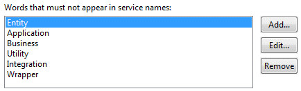
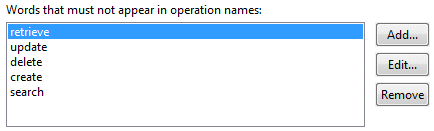
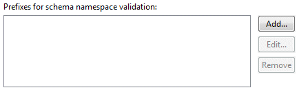
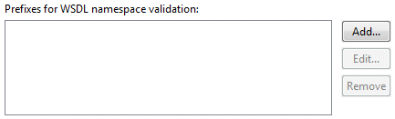

Summary
Enterprise schemas should not contain version numbers within the file names.
Description
This audit rule looks for enterprise schemas that contain a version number in their name.
Example
The following enterprise schemas would be flagged as a violation because it contains a version number:
Enterprise_Quote_v1.92.xsd
It should be renamed to:
Enterprise_Quote.xsd
Summary
Use upper camel case when naming elements that are complex types.
Description
This audit rule looks for declarations of complex type names that are not using upper camel case.
Example
The following element declaration has a complex type but its name is declared in lower camel case and would thus be marked as a violation:
<element
name="firstName"
type="StringTest"/>
Summary
Complex type names should conform to a naming standard.
Description
The following standard is being set to clarify definitions of complex types:
* Upper camel case should be used when naming complex types.
* When naming complex types, you must append 'Type' to the end of the name.
* Separate schemas/complex types for lists should not be created. Using
the word 'list' in a schema causes confusion in the underlying
implementation. Set maxOccurs="unbounded" to create a list of elements;
this allows the bindings to determine the implementation details of a
list structure.
* Element names must not be plural.
Example
The following complex type declarations have names that do not conform to a standard and would thus be marked as violations:
<complexType name="Book"/>
<complexType name="bookType"/>
They should be renamed to look something like the following:
<complexType name="BookType"/>
The following complex type declaration was only created to wrap a list and would thus be marked as a violation:
<complexType name="RetrieveCriteriaList">
<sequence>
<element
name="RetrieveCriteria"
type="retrieveCriteria:RetrieveKeyType"
maxOccurs="unbounded"/>
</sequence>
</complexType>
Summary
The default namespace xmlns should be set without using a prefix.
Description
This audit rule looks for schema xmlns declarations that refer to the http://www.w3.org/2001/XMLSchema URI using a prefix such as "xsd:". Not using a prefix removes the need to have the prefix for all schema components such as element, complexType and built in types.
Example
The following schema reference would be marked as a violation:
<xsd:schema xmlns:xsd="http://www.w3.org/2001/XMLSchema" ... >
Use the following instead:
<schema xmlns="http://www.w3.org/2001/XMLSchema" ... >
Summary
Binding information should not be included in XML schemas.
Description
This audit rule looks for any usage of the <wsdl:binding> tag.
Example
The following WSDL definition declares bindings and would thus be marked as a violation:
<wsdl:definitions .... >
<wsdl:binding name="nmtoken" type="qname"> *
<!-- extensibility element (1) --> *
<wsdl:operation name="nmtoken"> *
<!-- extensibility element (2) --> *
<wsdl:input name="nmtoken"?> ?
<!-- extensibility element (3) -->
</wsdl:input>
<wsdl:output name="nmtoken"? >?
<!-- extensibility element (4) --> *
</wsdl:output>
<wsdl:fault name="nmtoken"> *
<!-- extensibility element (5) --> *
</wsdl:fault>
</wsdl:operation>
</wsdl:binding>
</wsdl:definitions>
Summary
Never use both nillable ="true" and minOccurs="0" on the same element.
Description
This audit rule looks for element declarations that use both nillable ="true" and minOccurs="0". This results in an ambiguous interface because consumers do not know if the element will exist but be empty or be left out of the instance document all together.
Example
The following element declares both nillable ="true" and minOccurs="0" at the same time and would thus be marked as a violation:
<xs:element
minOccurs="0"
name="minzeronil"
nillable="true"
type="xs:string"/>
Summary
The complex type of the message document must contain a "schemaVersion" attribute.
Description
This audit rule looks for complex types of a message document that do not have a "schemaVersion" attribute.
Example
The following entry should be present in the message document:
<attribute
name="schemaVersion"
type="decimal"
use="required"
fixed="1.0"/>
Summary
One or more grouping identifiers should be used to further clarify the namespace.
Description
This audit rule looks for namespace URIs that do not contain either a service name as a part of a namespace or one of the list of grouping identifiers. Grouping identifiers should be used to further clarify the namespace. This could be the service name or some other grouping that would separate it from elements used elsewhere.
Example
The following service declaration does not use a service name as a part of its xmlns:tns and would thus be marked as a violation:
<definitions
name="StockQuote"
targetNamespace="http://example.com/stockquote.wsdl"
xmlns:tns="http://example.com/stockquote.wsdl"
xmlns:xsd1="http://example.com/stockquote.xsd"
xmlns:soap="http://schemas.xmlsoap.org/wsdl/soap/"
xmlns="http://schemas.xmlsoap.org/wsdl/">
...
</definitions>
Summary
At the end of the namespace, the version of the WSDL or schema must be specified.
Description
Version numbers must have a major number specified such as v2. The second and third version numbers are left off of service artifact naming because fixes/minor releases generally do not affect the service interface. The 'v' must be lower case.
Example
The following namespaces would be flagged as a violation because they do not include a version number:
http://wsdl.example.com/wsdl/product/ProductService
http://schema.example.com/AutoValidationService
They should be replaced by something like the following:
http://wsdl.example.com/wsdl/product/ProductService/v1
http://schema.example.com/AutoValidationService/v2
Summary
Enterprise schemas must be pulled into your project and the link to the enterprise schemas must be relative.
Description
This audit rule looks for places where the access to enterprise schemas is made using an absolute URI.
Example
The following schema location specification would be flagged as a violation because it uses an absolute URI:
schemaLocation="http://Enterprise_SalesPreferenceService.xsd"
It should be replaced by something like the following:
schemaLocation="Enterprise_Quote.xsd"
Summary
Request messages must have the same name as the operation.
Description
This audit rule looks for message request declarations that do not explicitly specify its name as the same as the operation's name.
Example
The following operation declaration does not specify its request name as the same as the operation's name and would thus be marked as a violation:
<wsdl:definitions .... >
<wsdl:portType .... >
<wsdl:operation name="nmtoken" parameterOrder="nmtokens">
<wsdl:input message="qname"/>
<wsdl:output name="nmtoken" message="qname"/>
<wsdl:fault name="nmtoken" message="qname"/>
</wsdl:operation>
</wsdl:portType>
</wsdl:definitions>
Summary
Input and output of operations must be wrapped with a message request and response. Response messages must be named as follows: <OperationName>Response.
Description
This audit rule looks for message response declarations that specify a name that does not match the pattern <OperationName>Response.
Example
The following operation declaration does not specify its response name as equal to <OperationName>Response and would thus be marked as a violation:
<wsdl:definitions .... >
<wsdl:portType .... >
<wsdl:operation name="nmtoken" parameterOrder="nmtokens">
<wsdl:input message="qname"/>
<wsdl:output name="nmtoken" message="qname"/>
<wsdl:fault name="nmtoken" message="qname"/>
</wsdl:operation>
</wsdl:portType>
</wsdl:definitions>
Summary
WSDL service names should conform to a naming standard.
Description
1. The word 'Service' must be added as a suffix to the service name
to distinguish between services and components.
For example an AccountService vs. an AccountComponent.
2. Service name should not include any service type information within the name.
This includes Entity, Application, Business, Utility, Integration, and Wrapper.
3. Service name should be written in camel case beginning with an upper case character.
Example
The following service declaration does not end with 'Service' and would thus be marked as a violation:
<wsdl:service name="NMToken">
....
</wsdl:service>

Summary
WSDL service operation names should conform to a naming standard.
Description
Service Operations names must follow the format: xxxxxYyyyy, where:
-xxxxx is a verb indicating the operation.
-Yyyyy is the subject of the operation. For application services
this is often the service name.
Standard Service Operation Names:
These names must be used within operation names matching the specified description.
* retrieve - returns one or more instance of a business entity.
* update - updates the information for one or more instances
of a business entity.
* delete - deletes one or more entities from the system.
* create - creates one or more new entity instances in the system.
* search - returns summary of data based on some search criteria.
Example
The following service operation declaration has a name incompatible with the declared standards and would thus be marked as a violation:
<wsdl:operation name="nmtoken">
....
</wsdl:operation>

Summary
Use lower camel case when naming elements that are simple types.
Description
This audit rule looks for declarations of simple type names that are not using lower camel case.
Example
The following element declaration has simple type but its name is declared in upper camel case and would thus be marked as a violation:
<element name="FirstName" type="string" />
Summary
Use lower camel case when naming simple types.
Description
This audit rule looks for declarations of simple type names that are not upper lower camel case.
Example
The following simple type declaration has its name in lower camel case and would thus be marked as a violation:
<simpleType name="MySimpleTypeName" />
Summary
Version number must be part of the schema definition.
Description
This audit rule looks for schema declarations that do not have the version attribute specified. The version number in the schema attribute is not validated against, but will provide a consistent way to determine the version of a particular schema. This version number does not carry over to the instance documents.
Example
The following schema declaration does not specify version attribute and would thus be marked as a violation:
<schema
targetNamespace="http://example.com/stockquote/v1"
xmlns="http://www.w3.org/2000/10/XMLSchema">
...
</schema>
Summary
A WSDL must contain a SOAP Action for all defined operations.
Description
This audit rule looks for wsdlsoap:operations that do not specify a soapAction attribute.
Example
The following operation declaration does not specify soapAction and would thus be marked as a violation:
<wsdlsoap:operation>
...
</wsdlsoap:operation>
Summary
Every schema should have a unique namespace.
Description
Target namespaces must be heterogeneous. This means that every schema will have a unique namespace. While this will not allow the use of 'redefine', it will ensure that no data collisions occur. Make sure to use groupings to ensure your schema namespace is unique.
Example
Two schemas with the same targetNamespace will be marked as a violation:
...
<schema
targetNamespace="http://faulty-domain.com/stockquote.xsd"
xmlns="http://www.w3.org/2000/10/XMLSchema">
...
</schema>
...
<schema
targetNamespace="http://faulty-domain.com/stockquote.xsd"
xmlns="http://www.w3.org/2000/10/XMLSchema">
...
</schema>
Summary
The schema namespace should start with one of a list of prefixes.
Description
This audit rule looks for all schema namespace declarations that do not start with one of a list of preconfigured prefixes. Using such a prefix identifies that the schema belongs to a specific provider.
Example
The following service declaration does not use the preconfigured http://example.com/ URI prefix for targetNamespace and would thus be marked as a violation:
<schema
targetNamespace="http://faulty-domain.com/stockquote.xsd"
xmlns="http://www.w3.org/2000/10/XMLSchema">
...
</schema>

Summary
The WSDL namespace should start with one of a list of prefixes.
Description
This audit rule looks for all WSDL namespace declarations that do not start with one of a list of preconfigured prefixes. Using such a prefix identifies that the WSDL belongs to a specific provider.
Example
The following service declaration does not use the preconfigured http://example.com/ URI prefix for tns namespace and would thus be marked as a violation:
<definitions
name="StockQuote"
targetNamespace="http://example.com/stockquote.wsdl"
xmlns:tns="http://error.com/stockquote.wsdl"
xmlns:xsd1="http://example.com/stockquote.xsd"
xmlns:soap="http://schemas.xmlsoap.org/wsdl/soap/"
xmlns="http://schemas.xmlsoap.org/wsdl/">
...
</definitions>

Summary
Namespaces must not have spaces or underscores. Use hyphens or camel case for separation of words.
Description
This audit rule looks for namespace declarations, both WSDL and schema, that uses spaces or underscores in a namespace name.
Example
The following namespace uses underscores in a namespace and would thus be marked as a violation:
http://wsdl.example.com/wsdl/product/product_service/v1
Summary
Do not use <xs:any.../> in your schemas.
Description
This audit rule looks for any usage of <xs:any>. Using <xs:any> causes validation complications, and can require excessive code to ensure proper values are passed in schemas.
Example
The following element declaration uses <xs:any> and would thus be marked as a violation:
<xs:element name="person">
<xs:complexType>
<xs:sequence>
<xs:element name="firstname" type="xs:string"/>
<xs:element name="lastname" type="xs:string"/>
<xs:any minOccurs="0"/>
</xs:sequence>
</xs:complexType>
</xs:element>
Summary
The elementFormDefault and attributeFormDefault schema attributes must both be set to qualified.
Description
This audit rule looks for schema declarations that do not require elementFormDefault and attributeFormDefault schema attributes to be required. Not doing so means that instance documents will have all elements prefixed with the namespace abbreviations. While this will result in larger instance documents, it will be easier to debug and trouble shoot issues with instance documents. Avoid using excessively long prefix's in large documents.
Example
The following schema declaration does not require elementFormDefault and attributeFormDefault schema attributes to be required and would thus be marked as a violation:
<schema
targetNamespace="http://faulty-domain.com/stockquote.xsd"
xmlns="http://www.w3.org/2000/10/XMLSchema">
...
</schema>
Summary
All services must do WSDL First development.
Description
This audit rule looks for names that indicate that an automatic WSDL generation approach was used. Specifically, it looks for the usage of "parameters" as a parameter (wsdl:part) name. The only exception is Application Services that are wrapping components. Application services that are wrapping existing components have the option to use or not use WSDL First. WSDL First development requires you to manually create the WSDL before creating the Java code.
Example
The following message declaration contains a parameter with a meaningless name and would thus be marked as a violation:
<wsdl:message name="rpmDateLookupRequest">
<twsdl:part
element="intf:rpmDateLookup"
name="parameters"/>
<wsdl:message/>
Summary
A WSDL must specify ESB endpoints. The soap location must contain "ccx/cc-router".
Description
This audit rule looks for declarations of wsdlsoap:address without either a location attribute defined or without a ccx/cc-router portion of URI in its value.
Example
The following declaration of wsdlsoap:address doesn't use ccx/cc-router in its location attribute definition:
<wsdlsoap:address
location="http://<tier>esb/ServiceName/version"/>
Summary
Message schemas can be included in WSDL documents. If they are included in the WSDL, the WSDL namespace can be used.
Description
This audit rule looks for message schemas that use a WSDL namespace without being included in a WSDL document.
Example
The following definition of a message will be marked as a violation because it isn't included in the WSDL document:
Summary Description Example <wsdl:message name="messageName">
....
</wsdl:message>XSD File Naming Convention
XSD file names must conform to a standard.
This audit rule looks for XSD files whose names do not contain one of the listed keywords or that include a version number (defined as a list of numbers separated with dots).
The following file names would be flagged as violations, the first because it does not include a listed keyword and the second because it includes a version number:
SystemData.xsd
Enterprise_SystemData_v1.2.xsd